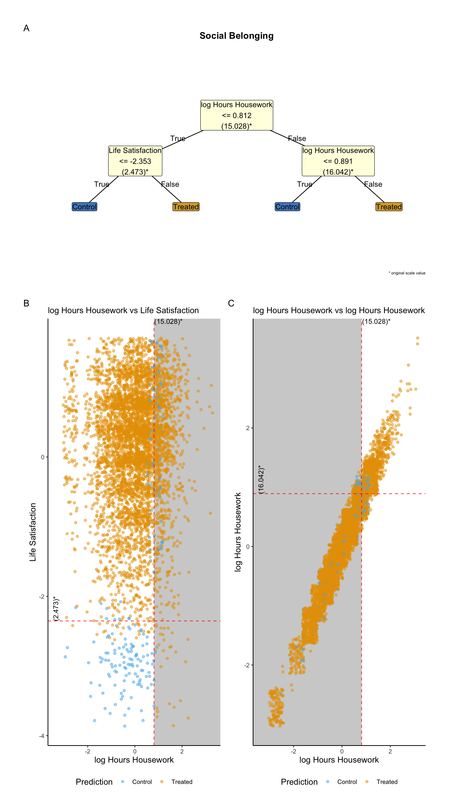
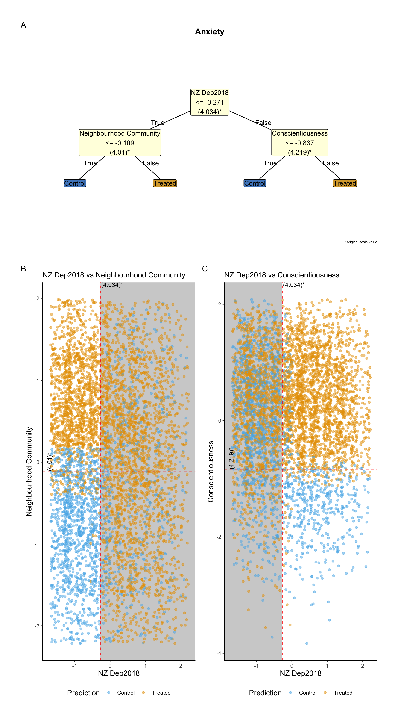

Method
Sample
Data were collected as part of the New Zealand Attitudes and Values Study (NZAVS), an annual longitudinal national probability panel assessing New Zealand residents’ social attitudes, personality, ideology, and health outcomes. The panel began in 2009 and has since expanded to include over fifty researchers, with responses from 40,000 participants to date. The study operates independently of political or corporate funding and is based at a university. It employs prize draws to incentivise participation. The NZAVS tends to slightly under-sample males and individuals of Asian descent and to over-sample females and Māori (the Indigenous people of New Zealand). To enhance the representativeness of our sample population estimates for the target population of New Zealand, we apply census-based survey weights that adjust for age, gender, and ethnicity (New Zealand European, Asian, Māori, Pacific) (Sibley, 2021). For more information about the NZAVS, visit: OSF.IO/75SNB. Refer to Appendix {{appendix_timeline}} for a histogram of daily responses for this cohort.
Target Population
The target population for this study comprises New Zealand residents as represented in the NZAVS time 10, years 2018-2019 of the New Zealand Attitudes and Values Study (NZAVS) during the years NZAVS time 10, years 2018-2019 weighted by New Zealand Census weights for age, gender, and ethnicity (refer to Sibley (2021)). The NZAVS is a national probability study designed to reflect the broader New Zealand population accurately. Despite its comprehensive scope, the NZAVS has some limitations in its demographic representation. Notably, it tends to under-sample males and individuals of Asian descent while over-sampling females and Māori (the indigenous peoples of New Zealand). To address these disparities and enhance the accuracy of our findings, we apply New Zealand Census survey weights to the sample data.
Eligibility Criteria
To be included in the analysis of this study, participants needed to participate in the NZAVS time 10, years 2018-2019 of the study and respond to the baseline measure of Extraversion.
Participants may have been lost to follow-up at the end of the study if they met eligibility criteria at NZAVS time 10, years 2018-2019. We adjusted for attrition and non-response using censoring weights, described below.
A total of 39,635 individuals met these criteria and were included in the study.
Average Treatment Effect
Researchers often want to know what might happen if we could change (or “intervene on”) a particular variable for everyone in a study—much like testing a new treatment in a randomised trial. Because we cannot always run an actual trial, we imagine a target trial (Hernán et al., 2016), a hypothetical experiment that clarifies exactly which cause-and-effect question we are trying to answer.
Here, we ask:
“How would the outcomes of interest change if, for everyone in the population, we set the exposure to {{value_exposure}}, compared with setting it to {{value_control}}, given each individual’s characteristics?”
Thus we compare two scenarios:
- {{name_exposure_threshold}}: Everyone receives exposure level
{value_exposure}. - {{name_control_threshold}}: Everyone receives exposure level
{value_control}.
The difference between the averages of these two scenarios is call the ‘Average Treatment Effect’ (ATE). By combining time series data with a rich set of covariates measured at baseline, we may, under the assumptions of no-measured confounding and other assumptions described below, isolate the effect of the intervening on the exposure from other variables that might distort the true causal relationship if not properly accounted for. By measuring a broad set of characteristics (such as demographics, personality traits, or other background factors) at baseline, we try to ensure that, once we adjust for them in our analysis, assignment to each of the exposure conditions is ‘as good as random.’ (Refer to Appendix {{appendix_assumptions_grf}} for an explanation of assumptions for obtaining the ATE).
Heterogeneous Treatment Effects and Treatment Policies
After estimating the overall average treatment effect (ATE) for the population, we turn to the question of whether different people respond differently. We investigate effect modifiers (or moderators)—factors that make the intervention more or less effective for certain subgroups—by estimating the Conditional Average Treatment Effect (CATE) using a causal forest approach. While the ATE reflects the overall impact, the CATE reveals how that impact can vary across individuals with different baseline characteristics. We denote the individual-level estimated treatment effect as \hat{\tau}(x), which represents the predicted benefit for an individual with covariates x. A notable advantage of causal forests is that we do not have to specify potential moderators in advance; the algorithm uncovers them automatically. We can also apply search algorithms to derive priority treatment rules that target the intervention to those most likely to benefit.
First, we standardised effect directions by inverting outcomes where lower scores were preferable so that positive values always indicated improvement. Specifically, we inverted Anxiety, Depression, Rumination.
Next, to reduce overfitting and distinguish true heterogeneity from noise, we split the sample. We trained the causal forest on the first half and tested its predictions exclusively on the second half. In the held-out data, we checked calibration by comparing the mean of the predicted CATEs, \hat{\tau}(x), with the overall ATE. We also performed a differential prediction test (Tibshirani et al., 2024) to assess whether the predicted variation was genuine. As an additional check for heterogeneity, we computed the Rank-Weighted Average Treatment Effect (RATE), which quantifies the benefit of targeting individuals predicted to benefit most (Tibshirani et al., 2024; Wager & Athey, 2018).
Having assessed preliminary evidence of heterogeneity using differential prediction and RATE estimation, we used Qini curves (Tibshirani et al., 2024) to illustrate how a targeted strategy might outperform a uniform one. Specifically, we compared:
- Uniform Allocation: treating (or not treating) everyone based on the ATE;
- Targeted Allocation: treating those with the highest predicted CATEs (\hat{\tau}(x)) first.
A positive Qini value suggests that a targeted strategy can achieve better outcomes. Here, we considered whether budgets limited to 20% or 50% of the population could yield greater improvements under targeted allocation than under the uniform approach.
Finally, when we found signs of genuine heterogeneity (via either RATE or Qini curves), we used policy trees (Athey & Wager, 2021a, 2021b; Sverdrup et al., 2024) to generate simple, rule-based treatment recommendations (e.g., “Treat if baseline score > X”). We implemented all heterogeneity analyses—calibration tests, RATE, Qini curves, and policy trees—in R using the grf (Tibshirani et al., 2024), policytree (Sverdrup et al., 2024), and margot (Bulbulia, 2024a) packages. This approach enabled us to identify individualised effects, confirm their robustness, estimate the potential value of targeting, and propose straightforward strategies for personalisation. (Refer to Appendix {{appendix_explain_grf}} for a detailed explanation of our approach.)
Exposure Indicator
The New Zealand Attitudes and Values Study assesses Extraversion using the following question:
Mini-IPIP6 Extraversion dimension: (i) I am the life of the party. (ii) I don’t talk a lot. (r) (iii) I keep in the background. (r) (iv) I talk to a lot of different people at parties.(Refer to Appendix {{appendix_measures}}).
Causal Identification Assumptions
This study relies on the following identification assumptions for estimating the causal effect of Extraversion:
Consistency: the observed outcome under the observed Extraversion is equal to the potential outcome under that exposure level. As part of consistency, we assume no interference: the potential outcomes for one individual are not affected by the Extraversion status of other individuals.
No unmeasured confounding: all variables that affect both Extraversion and the outcome have been measured and accounted for in the analysis.
Positivity: there is a non-zero probability of receiving each level of Extraversion for every combination of values of Extraversion and confounders in the population. Positivity is the only fundamental casual assumption that can be evaluated with data (refer to Appendix {{appendix_positivity}}).
Confounding Control
To manage confounding in our analysis, we implement VanderWeele (2019)’s modified disjunctive cause criterion by following these steps:
- Identified all common causes of both the treatment and outcomes.
- Excluded instrumental variables that affect the exposure but not the outcome. Instrumental variables do not contribute to controlling confounding and can reduce the efficiency of the estimates.
- Included proxies for unmeasured confounders affecting both exposure and outcome. According to the principles of d-separation Pearl (2009), using proxies allows us to control for their associated unmeasured confounders indirectly.
- Controlled for baseline exposure and baseline outcome. Both are used as proxies for unmeasured common causes, enhancing the robustness of our causal estimates, refer to VanderWeele et al. (2020).
Statistical Estimation
We estimate heterogeneous treatment effects with Generalized Random Forests (GRF) (Tibshirani et al., 2024). GRF extends random forests for causal inference by focusing on conditional average treatment effects (CATE). It handles complex interactions and non-linearities without explicit model specification, and it provides ‘honest’ estimates by splitting data between model-fitting and inference. GRF is doubly robust because it remains consistent if either the outcome model or the propensity model is correct. We evaluate policies with the policytree package (Athey & Wager, 2021b; Sverdrup et al., 2024) and visualise results with margot (Bulbulia, 2024a). (Refer to Appendix {{appendix_explain_grf}} for a detailed explanation of our approach.)
Missing Data
The GRF package accepts missing values at baseline. To obtain valid inference for missing responses we computed inverse probability of censoring weights for censoring of the exposure, given that systematic censoring following the baseline wave may lead to selection bias that limit generalistion to the baseline target population (Bulbulia, 2024b). See Appendix {{appendix_explain_grf}}.
Sensitivity Analysis
We perform sensitivity analyses using the E-value metric (Linden et al., 2020; VanderWeele & Ding, 2017). The E-value represents the minimum association strength (on the risk ratio scale) that an unmeasured confounder would need to have with both the exposure and outcome—after adjusting for measured covariates—to explain away the observed exposure-outcome association (Linden et al., 2020; VanderWeele et al., 2020).
Results
Average Treatement Effects
| E[Y(1)]-E[Y(0)] | 2.5 % | 97.5 % | E_Value | E_Val_bound | |
|---|---|---|---|---|---|
| Social Belonging | 0.128 | 0.084 | 0.171 | 1.496 | 1.375 |
| Neighbourhood Community | 0.117 | 0.071 | 0.164 | 1.466 | 1.331 |
| Social Support | 0.101 | 0.052 | 0.150 | 1.421 | 1.274 |
| Meaning: Purpose | 0.100 | 0.049 | 0.150 | 1.418 | 1.264 |
| Self Esteem | 0.089 | 0.049 | 0.129 | 1.387 | 1.260 |
| Meaning: Sense | 0.089 | 0.036 | 0.141 | 1.387 | 1.219 |
| Anxiety | -0.070 | -0.118 | -0.022 | 1.331 | 1.160 |
| Personal Well-being Index | 0.052 | 0.010 | 0.094 | 1.274 | 1.110 |
| Depression | -0.058 | -0.108 | -0.007 | 1.293 | 1.088 |
| Life Satisfaction | 0.045 | 0.000 | 0.089 | 1.250 | 1.003 |
| Rumination | -0.047 | -0.101 | 0.006 | 1.257 | 1.000 |
| Hours of Exercise (log) | -0.029 | -0.085 | 0.028 | 1.192 | 1.000 |
The following outcomes showed reliable causal evidence (E-Value lower bound > 1.2): - Social Belonging: 0.128 (0.084, 0.171); On original scale, 0.14 (0.092, 0.187). E-Value bound = 1.375 - Neighbourhood Community: 0.117 (0.071, 0.164); On original scale, 0.184 (0.111, 0.257). E-Value bound = 1.331 - Social Support: 0.101 (0.052, 0.15); On original scale, 0.113 (0.058, 0.168). E-Value bound = 1.274 - Meaning: Purpose: 0.1 (0.049, 0.15); On original scale, 0.144 (0.071, 0.217). E-Value bound = 1.264 - Self Esteem: 0.089 (0.049, 0.129); On original scale, 0.113 (0.062, 0.164). E-Value bound = 1.26 - Meaning: Sense: 0.089 (0.036, 0.141); On original scale, 0.105 (0.043, 0.168). E-Value bound = 1.219
Heterogeneous Treatment Effects
Comparison of targeting operating characteristic (TOC) by rank average treatment effect (RATE): AUTOC vs Qini
We applied two TOC by RATE methods to the same causal-forest \tau(x) estimates:
AUTOC intensifies focus on top responders via logarithmic weighting.
Qini balances effect size and prevalence via linear weighting.
When Qini and AUTOC disagree on positive RATE (only AUTOC yields a positive RATE for Hours of Exercise (log); only Qini yields a positive RATE for Meaning: Sense), choose Qini to maximise overall benefit or AUTOC to focus on top responders.
Refer to Appendix F for details.
RATE AUTOC Results
Evidence for heterogeneous treatment effects (policy = treat best responders) using AUTOC
AUTOC uses logarithmic weighting to focus treatment on top responders.
Positive RATE estimates for: Hours of Exercise (log).
Estimates (Hours of Exercise (log): 0.065 (95% CI 0.016, 0.114)) show robust heterogeneity.
For outcomes with 95%% CI crossing zero (Meaning: Sense, Rumination, Anxiety, Personal Well-being Index, Self Esteem, Social Belonging, Social Support, Life Satisfaction, Meaning: Purpose, Depression, Neighbourhood Community), evidence is inconclusive.
QINI Curve Results
Evidence for heterogeneous treatment effects (policy = treat best responders) using Qini
Qini uses linear weighting to balance effect size and prevalence for aggregate gain.
Positive RATE estimates for: Meaning: Sense.
Estimates (Meaning: Sense: 0.020 (95% CI 0.004, 0.036)) show robust heterogeneity.
Negative RATE estimates for: Neighbourhood Community.
Estimates (Neighbourhood Community: -0.026 (95% CI -0.040, -0.012)) caution against CATE prioritisation.
For outcomes with 95%% CI crossing zero (Hours of Exercise (log), Personal Well-being Index, Anxiety, Self Esteem, Social Support, Life Satisfaction, Social Belonging, Rumination, Meaning: Purpose, Depression), evidence is inconclusive.
| Model | Spend 20% | Spend 50% |
|---|---|---|
| Meaning: Sense | 0.04 [0.01, 0.07] | -0.00 [-0.06, 0.05] |
We computed the cumulative benefits as we increase the treated fraction by prioritising conditional average treatment effects (CATE) at two different spend levels: 20% of a total budget and 50% of a total budget, where the contrast is no priority assignment. Meaning: Sense At 20% spend: CATE prioritisation is beneficial (diff: 0.04 [95% CI: 0.01, 0.07]). At 50 % spend: No reliable benefits from CATE prioritisation.
Policy Trees
Policy Tree Interpretations (depth 2)
A shallow policy tree recommends actions based on two splits for depth=2, or one split for depth=1. We trained on 50% of the data and evaluated on the rest.
Findings for log Hours Exercise:
Split 1: Short Form Health ≤ -0.333. Within that subgroup, split 2a: Belong ≤ -0.441, → Control; Belong > -0.441 → Treated.
Split 2: Short Form Health > -0.333. Within that subgroup, split 2b: Lifesat ≤ -0.268, → Control; Lifesat > -0.268 → Treated.
Findings for Meaning Sense:
Split 1: Alcohol Intensity ≤ -0.313. Within that subgroup, split 2a: log Hours Commute ≤ -0.496, → Control; log Hours Commute > -0.496 → Treated.
Split 2: Alcohol Intensity > -0.313. Within that subgroup, split 2b: Age ≤ 0.612, → Treated; Age > 0.612 → Control.


Discussion
Ethics
The University of Auckland Human Participants Ethics Committee reviews the NZAVS every three years. Our most recent ethics approval statement is as follows: The New Zealand Attitudes and Values Study was approved by the University of Auckland Human Participants Ethics Committee on 26/05/2021 for six years until 26/05/2027, Reference Number UAHPEC22576.
Acknowledgements
The New Zealand Attitudes and Values Study is supported by a grant from the Templeton Religious Trust (TRT0196; TRT0418). JB received support from the Max Plank Institute for the Science of Human History. The funders had no role in preparing the manuscript or deciding to publish it.
Data Availability
The data described in the paper are part of the New Zealand Attitudes and Values Study. Members of the NZAVS management team and research group hold full copies of the NZAVS data. A de-identified dataset containing only the variables analysed in this manuscript is available upon request from the corresponding author or any member of the NZAVS advisory board for replication or checking of any published study using NZAVS data. The code for the analysis can be found at OSF link.
Appendix A: Measures
Measures
Covariate Measures
Baseline Covariates
Age
What is your date of birth?
We asked participants’ ages in an open-ended question (“What is your age?” or “What is your date of birth”). (string_is? Developed for the NZAVS.)
Agreeableness
I sympathize with others’ feelings. I am not interested in other people’s problems. I feel others’ emotions. I am not really interested in others (reversed).
Mini-IPIP6 Agreeableness dimension: (i) I sympathize with others’ feelings. (ii) I am not interested in other people’s problems. (r) (iii) I feel others’ emotions. (iv) I am not really interested in others. (r) (Sibley et al., 2011)
Alcohol Frequency
“How often do you have a drink containing alcohol?”
Participants could chose between the following responses: ‘(1 = Never - I don’t drink, 2 = Monthly or less, 3 = Up to 4 times a month, 4 = Up to 3 times a week, 5 = 4 or more times a week, 6 = Don’t know)’ (Health, 2013)
Alcohol Intensity
“How many drinks containing alcohol do you have on a typical day when drinking alcohol? (number of drinks on a typical day when drinking)”
Participants responded using an open-ended box. (Health, 2013)
Born in Nz
Where were you born? (please be specific, e.g., which town/city?)
Coded binary (1 = New Zealand; 0 = elsewhere.) (string_is? Developed for the NZAVS.)
Conscientiousness
I get chores done right away. I like order. I make a mess of things. I often forget to put things back in their proper place.
Mini-IPIP6 Conscientiousness dimension: (i) I get chores done right away. (ii) I like order. (iii) I make a mess of things. (r) (iv) I often forget to put things back in their proper place. (r) (Sibley et al., 2011)
Education Level
What is your highest level of qualification?
We asked participants, “What is your highest level of qualification?”. We coded participans highest finished degree according to the New Zealand Qualifications Authority. Ordinal-Rank 0-10 NZREG codes (with overseas school qualifications coded as Level 3, and all other ancillary categories coded as missing) (string_is? Developed for the NZAVS.)
Employed
Are you currently employed (This includes self-employed of casual work)?
Binary response: (0 = No, 1 = Yes) (string_is? Stats NZ Census Question)
Ethnicity
Which ethnic group(s) do you belong to?
Coded string: (1 = New Zealand European; 2 = Māori; 3 = Pacific; 4 = Asian) (string_is? NZ Census coding.)
Disability Status
Do you have a health condition or disability that limits you and that has lasted for 6+ months?
We assessed disability with a one-item indicator adapted from Verbrugge (1997). It asks, “Do you have a health condition or disability that limits you and that has lasted for 6+ months?” (1 = Yes, 0 = No). (Verbrugge, 1997)
Log Hours with Children
Hours spent…looking after children.
We took the natural log of the response + 1. (Sibley et al., 2011)
Log Hours Commuting
Hours spent…travelling/commuting.
We took the natural log of the response + 1. (string_is? Developed for the NZAVS.)
Log Hours of Exercise
Hours spent…exercising/physical activity.
We took the natural log of the response + 1. (Sibley et al., 2011)
Log Hours on Housework
Hours spent…housework/cooking.
We took the natural log of the response + 1. (Sibley et al., 2011)
Log Household Income
Please estimate your total household income (before tax) for the year XXXX.
We took the natural log of the response + 1. (string_is? Developed for the NZAVS.)
Male
We asked participants’ gender in an open-ended question: “what is your gender?”
Here, we coded all those who responded as Male as 1, and those who did not as 0. (Fraser et al., 2020)
Neuroticism
I have frequent mood swings. I am relaxed most of the time (reversed). I get upset easily. I seldom feel blue (reversed).
Mini-IPIP6 Neuroticism dimension: (i) I have frequent mood swings. (ii) I am relaxed most of the time. (r) (iii) I get upset easily. (iv) I seldom feel blue. (r) (Sibley et al., 2011)
Non Heterosexual
How would you describe your sexual orientation? (e.g., heterosexual, homosexual, straight, gay, lesbian, bisexual, etc.)
Open-ended question, coded as binary (not heterosexual = 1). (Greaves et al., 2017)
Nz Deprivation Index
New Zealand Deprivation - Decile Index - Using 2018 Census Data
Numerical: (1-10) (Atkinson et al., 2019)
Occupational Prestige Index
We assessed occupational prestige and status using the New Zealand Socio-economic Index 13 (NZSEI-13).
This index uses the income, age, and education of a reference group, in this case, the 2013 New Zealand census, to calculate a score for each occupational group. Scores range from 10 (Lowest) to 90 (Highest). This list of index scores for occupational groups was used to assign each participant a NZSEI-13 score based on their occupation. (Fahy et al., 2017)
Openness
I have a vivid imagination. I have difficulty understanding abstract ideas (reversed). I do not have a good imagination (reversed). I am not interested in abstract ideas (reversed).
Mini-IPIP6 Openness to Experience dimension: (i) I have a vivid imagination. (ii) I have difficulty understanding abstract ideas. (r) (iii) I do not have a good imagination. (r) (iv) I am not interested in abstract ideas. (r) (Sibley et al., 2011)
Parent
If you are a parent, in which year was your eldest child born?
Parents were coded as 1, while the others were coded as 0. (Developed? for the NZAVS.)
Has Partner
What is your relationship status? (e.g., single, married, de-facto, civil union, widowed, living together, etc.)
Coded as binary (has partner = 1). (string_is? Developed for the NZAVS.)
Political Conservatism
Please rate how politically liberal versus conservative you see yourself as being.
Ordinal response: (1 = Extremely Liberal, 7 = Extremely Conservative) (Jost, 2006)
Religious Identification
How important is your religion to how you see yourself?
Ordinal response: (1 = Not Important, 7 = Very Important) (string_is? Developed for the NZAVS.)
Rural Classification
High Urban Accessibility = 1, Medium Urban Accessibility = 2, Low Urban Accessibility = 3, Remote = 4, Very Remote = 5.
“Participants residence locations were coded according to a five-level ordinal categorisation ranging from Urban to Rural.” (Whitehead et al., 2023)
Sample Frame Opt in
Participant was not randomly sampled from the New Zealand Electoral Roll.
Code string (Binary): (0 = No, 1 = Yes) (string_is? Developed for the NZAVS.)
Short Form Health
In general, would you say your health is…
Ordinal response: (1 = Poor, 7 = Excellent) (Instrument Ware Jr & Sherbourne, 1992)
Smoker
Do you currently smoke tobacco cigarettes?
Binary smoking indicator (0 = No, 1 = Yes). (string_is? Developed for NZAVS.)
Exposure Measures
Exposure Variable
Extraversion
I am the life of the party. I don’t talk a lot (reversed). I keep in the background (reversed). I talk to a lot of different people at parties.
Mini-IPIP6 Extraversion dimension: (i) I am the life of the party. (ii) I don’t talk a lot. (r) (iii) I keep in the background. (r) (iv) I talk to a lot of different people at parties. (Sibley et al., 2011)
Outcome Measures
Outcome Variables
Anxiety
During the past 30 days, how often did…you feel restless or fidgety? During the past 30 days, how often did…you feel that everything was an effort? During the past 30 days, how often did…you feel nervous?
Ordinal response: (0 = None Of The Time; 1 = A Little Of The Time; 2= Some Of The Time; 3 = Most Of The Time; 4 = All Of The Time) (Kessler et al., 2002)
Depression
During the past 30 days, how often did…you feel hopeless? During the past 30 days, how often did…you feel so depressed that nothing could cheer you up? During the past 30 days, how often did…you feel you feel restless or fidgety?
Ordinal response: (0 = None Of The Time; 1 = A Little Of The Time; 2= Some Of The Time; 3 = Most Of The Time; 4 = All Of The Time) (Kessler et al., 2002)
Life Satisfaction
I am satisfied with my life. In most ways my life is close to ideal.
Ordinal response (1 = Strongly Disagree to 7 = Strongly Agree). (Diener et al., 1985)
Log Hours of Exercise
Hours spent…exercising/physical activity.
We took the natural log of the response + 1. (Sibley et al., 2011)
Meaning Purpose
My life has a clear sense of purpose
Ordinal response (1 = Strongly Disagree to 7 = Strongly Agree). (Steger et al., 2006)
Meaning Sense
I have a good sense of what makes my life meaningful.
Ordinal response (1 = Strongly Disagree to 7 = Strongly Agree). (Steger et al., 2006)
Neighbourhood Community
I feel a sense of community with others in my local neighbourhood.
Ordinal response (1 = Strongly Disagree to 7 = Strongly Agree). (Sengupta et al., 2013)
Personal Well Being Index
no information available for this variable.
Rumination
During the last 30 days, how often did…you have negative thoughts that repeated over and over?
Ordinal responses: 0 = None of The Time, 1 = A little of The Time, 2 = Some of The Time, 3 = Most of The Time, 4 = All of The Time. (Nolen-hoeksema & Morrow, 1993)
Self Esteem
On the whole am satisfied with myself. Take a positive attitude toward myself. Am inclined to feel that I am a failure (reversed).
Ordinal response (1 = Very inaccurate to 7 = Very accurate). (Rosenberg, 1965)
Appendix B: Sample
Table 3 presents sample demographic statistics.
| 2018 | |
|---|---|
| (N=39635) | |
| Age | |
| Mean (SD) | 48.5 (13.9) |
| Median [Min, Max] | 51.0 [18.0, 99.0] |
| Agreeableness | |
| Mean (SD) | 5.35 (0.988) |
| Median [Min, Max] | 5.47 [1.00, 7.00] |
| Missing | 9 (0.0%) |
| Alcohol Frequency | |
| Mean (SD) | 2.16 (1.34) |
| Median [Min, Max] | 2.00 [0, 5.00] |
| Missing | 1342 (3.4%) |
| Alcohol Intensity | |
| Mean (SD) | 2.15 (2.09) |
| Median [Min, Max] | 2.00 [0, 15.0] |
| Missing | 2348 (5.9%) |
| Belong | |
| Mean (SD) | 5.14 (1.07) |
| Median [Min, Max] | 5.31 [1.00, 7.00] |
| Missing | 7 (0.0%) |
| Born in NZ | |
| 0 | 8510 (21.5%) |
| 1 | 30670 (77.4%) |
| Missing | 455 (1.1%) |
| Conscientiousness | |
| Mean (SD) | 5.10 (1.06) |
| Median [Min, Max] | 5.23 [1.00, 7.00] |
| Education Level | |
| no_qualification | 1003 (2.5%) |
| cert_1_to_4 | 13801 (34.8%) |
| cert_5_to_6 | 4953 (12.5%) |
| university | 10400 (26.2%) |
| post_grad | 4220 (10.6%) |
| masters | 3297 (8.3%) |
| doctorate | 930 (2.3%) |
| Missing | 1031 (2.6%) |
| Employed | |
| 0 | 8111 (20.5%) |
| 1 | 31475 (79.4%) |
| Missing | 49 (0.1%) |
| Ethnicity | |
| euro | 31454 (79.4%) |
| maori | 4561 (11.5%) |
| pacific | 971 (2.4%) |
| asian | 2124 (5.4%) |
| Missing | 525 (1.3%) |
| Disability Status | |
| Mean (SD) | 0.223 (0.416) |
| Median [Min, Max] | 0 [0, 1.00] |
| Missing | 745 (1.9%) |
| Log Hours with Children | |
| Mean (SD) | 1.18 (1.61) |
| Median [Min, Max] | 0.0341 [0, 5.13] |
| Missing | 1242 (3.1%) |
| Log Hours Commuting | |
| Mean (SD) | 1.50 (0.832) |
| Median [Min, Max] | 1.61 [0, 4.40] |
| Missing | 1242 (3.1%) |
| Log Hours Exercising | |
| Mean (SD) | 1.55 (0.846) |
| Median [Min, Max] | 1.61 [0, 4.40] |
| Missing | 1242 (3.1%) |
| Log Hours on Housework | |
| Mean (SD) | 2.14 (0.782) |
| Median [Min, Max] | 2.20 [0, 5.13] |
| Missing | 1242 (3.1%) |
| Log Household Income | |
| Mean (SD) | 11.4 (0.765) |
| Median [Min, Max] | 11.5 [0.685, 14.9] |
| Missing | 3067 (7.7%) |
| Male | |
| 0 | 24766 (62.5%) |
| 1 | 14767 (37.3%) |
| Missing | 102 (0.3%) |
| Neuroticism | |
| Mean (SD) | 3.49 (1.15) |
| Median [Min, Max] | 3.48 [1.00, 7.00] |
| Missing | 10 (0.0%) |
| Non-heterosexual | |
| 0 | 35100 (88.6%) |
| 1 | 2562 (6.5%) |
| Missing | 1973 (5.0%) |
| NZ Deprivation Index | |
| Mean (SD) | 4.77 (2.73) |
| Median [Min, Max] | 4.05 [1.00, 10.0] |
| Missing | 255 (0.6%) |
| Occupational Prestige Index | |
| Mean (SD) | 54.1 (16.5) |
| Median [Min, Max] | 54.0 [10.0, 90.0] |
| Missing | 536 (1.4%) |
| Openness | |
| Mean (SD) | 4.96 (1.12) |
| Median [Min, Max] | 5.00 [1.00, 7.00] |
| Missing | 3 (0.0%) |
| Parent | |
| 0 | 11539 (29.1%) |
| 1 | 27776 (70.1%) |
| Missing | 320 (0.8%) |
| Has Partner | |
| Mean (SD) | 0.752 (0.432) |
| Median [Min, Max] | 1.00 [0, 1.00] |
| Missing | 1244 (3.1%) |
| Political Conservatism | |
| Mean (SD) | 3.59 (1.38) |
| Median [Min, Max] | 3.97 [1.00, 7.00] |
| Missing | 2682 (6.8%) |
| Religious Identification | |
| Mean (SD) | 2.36 (2.18) |
| Median [Min, Max] | 1.00 [1.00, 7.00] |
| Missing | 1050 (2.6%) |
| Rural Classification | |
| High Urban Accessibility | 24406 (61.6%) |
| Medium Urban Accessibility | 7431 (18.7%) |
| Low Urban Accessibility | 4818 (12.2%) |
| Remote | 2241 (5.7%) |
| Very Remote | 486 (1.2%) |
| Missing | 253 (0.6%) |
| Sample Frame Opt-In | |
| 0 | 38485 (97.1%) |
| 1 | 1150 (2.9%) |
| Short Form Health | |
| Mean (SD) | 5.05 (1.17) |
| Median [Min, Max] | 5.04 [1.00, 7.00] |
| Missing | 6 (0.0%) |
| Smoker | |
| 0 | 35771 (90.3%) |
| 1 | 2880 (7.3%) |
| Missing | 984 (2.5%) |
Exposure Variable
| 2018 | 2019 | |
|---|---|---|
| (N=39635) | (N=39635) | |
| Extraversion | ||
| Mean (SD) | 3.91 (1.20) | 3.86 (1.19) |
| Median [Min, Max] | 3.96 [1.00, 7.00] | 3.79 [1.00, 7.00] |
| Missing | 0 (0%) | 11117 (28.0%) |
| Extraversion (binary) | ||
| [1.0,4.0] | 21138 (53.3%) | 15637 (39.5%) |
| (4.0,7.0] | 18497 (46.7%) | 12881 (32.5%) |
| Missing | 0 (0%) | 11117 (28.0%) |
Outcome Variables
| 2018 | 2020 | Overall | |
|---|---|---|---|
| (N=39635) | (N=39635) | (N=79270) | |
| Social Belonging | |||
| Mean (SD) | 5.14 (1.07) | 5.06 (1.09) | 5.11 (1.08) |
| Median [Min, Max] | 5.31 [1.00, 7.00] | 5.05 [1.00, 7.00] | 5.30 [1.00, 7.00] |
| Missing | 7 (0.0%) | 13278 (33.5%) | 13285 (16.8%) |
| Anxiety | |||
| Mean (SD) | 1.21 (0.774) | 1.17 (0.756) | 1.19 (0.767) |
| Median [Min, Max] | 1.00 [0, 4.00] | 1.00 [0, 4.00] | 1.00 [0, 4.00] |
| Missing | 51 (0.1%) | 13275 (33.5%) | 13326 (16.8%) |
| Depression | |||
| Mean (SD) | 0.584 (0.751) | 0.550 (0.723) | 0.571 (0.740) |
| Median [Min, Max] | 0.333 [0, 4.00] | 0.333 [0, 4.00] | 0.333 [0, 4.00] |
| Missing | 54 (0.1%) | 13273 (33.5%) | 13327 (16.8%) |
| Life Satisfaction | |||
| Mean (SD) | 5.30 (1.20) | 5.25 (1.23) | 5.28 (1.21) |
| Median [Min, Max] | 5.50 [1.00, 7.00] | 5.50 [1.00, 7.00] | 5.50 [1.00, 7.00] |
| Missing | 260 (0.7%) | 13560 (34.2%) | 13820 (17.4%) |
| Hours of Exercise (log) | |||
| Mean (SD) | 1.55 (0.846) | 1.63 (0.839) | 1.58 (0.844) |
| Median [Min, Max] | 1.61 [0, 4.40] | 1.78 [0, 4.40] | 1.61 [0, 4.40] |
| Missing | 1242 (3.1%) | 13770 (34.7%) | 15012 (18.9%) |
| Meaning: Purpose | |||
| Mean (SD) | 5.20 (1.41) | 5.15 (1.44) | 5.18 (1.42) |
| Median [Min, Max] | 5.05 [1.00, 7.00] | 5.04 [1.00, 7.00] | 5.04 [1.00, 7.00] |
| Missing | 1010 (2.5%) | 13650 (34.4%) | 14660 (18.5%) |
| Meaning: Sense | |||
| Mean (SD) | 5.71 (1.22) | 5.71 (1.19) | 5.71 (1.20) |
| Median [Min, Max] | 5.99 [1.00, 7.00] | 5.99 [1.00, 7.00] | 5.99 [1.00, 7.00] |
| Missing | 128 (0.3%) | 13162 (33.2%) | 13290 (16.8%) |
| Neighbourhood Community | |||
| Mean (SD) | 4.19 (1.66) | 4.38 (1.57) | 4.27 (1.63) |
| Median [Min, Max] | 4.03 [1.00, 7.00] | 4.95 [1.00, 7.00] | 4.04 [1.00, 7.00] |
| Missing | 212 (0.5%) | 13202 (33.3%) | 13414 (16.9%) |
| Pwi | |||
| Mean (SD) | 7.09 (1.66) | 7.18 (1.63) | 7.12 (1.65) |
| Median [Min, Max] | 7.29 [0, 10.0] | 7.47 [0, 10.0] | 7.46 [0, 10.0] |
| Missing | 41 (0.1%) | 13120 (33.1%) | 13161 (16.6%) |
| Rumination | |||
| Mean (SD) | 0.853 (1.00) | 0.797 (0.959) | 0.831 (0.987) |
| Median [Min, Max] | 0.955 [0, 4.00] | 0.0495 [0, 4.00] | 0.953 [0, 4.00] |
| Missing | 135 (0.3%) | 13335 (33.6%) | 13470 (17.0%) |
| Self Esteem | |||
| Mean (SD) | 5.14 (1.28) | 5.13 (1.27) | 5.14 (1.28) |
| Median [Min, Max] | 5.34 [1.00, 7.00] | 5.34 [1.00, 7.00] | 5.34 [1.00, 7.00] |
| Missing | 11 (0.0%) | 13280 (33.5%) | 13291 (16.8%) |
| Social Support | |||
| Mean (SD) | 5.95 (1.12) | 5.94 (1.12) | 5.95 (1.12) |
| Median [Min, Max] | 6.30 [1.00, 7.00] | 6.29 [1.00, 7.00] | 6.30 [1.00, 7.00] |
| Missing | 30 (0.1%) | 13112 (33.1%) | 13142 (16.6%) |
Appendix C: Transition Matrix to Check The Positivity Assumption
| From / To | State 0 | State 1 | Total |
|---|---|---|---|
| State 0 | 17572 | 2271 | 19843 |
| State 1 | 2400 | 6275 | 8675 |
These transition matrices capture shifts in states between consecutive waves. Each cell shows the count of individuals transitioning from one state to another. Rows are the initial state (From), columns the subsequent state (To). Diagonal entries (in bold) mark those who stayed in the same state.
Appendix D: Evidence of Heterogeneity
| Outcome | Mean Est. (SE) | Mean p-value | Mean Status | Diff. Est. (SE) | Diff. p-value | Heterogeneity |
|---|---|---|---|---|---|---|
| Social Belonging | 0.98 (0.21) | 0.00e+00 | Calibrated | -1.26 (0.59) | 0.984 | No heterogeneity |
| Anxiety | 0.9 (0.47) | 0.027 | Calibrated | -1.11 (0.55) | 0.978 | No heterogeneity |
| Depression | 1.13 (0.96) | 0.118 | Not calibrated | 0.2 (0.63) | 0.374 | No heterogeneity |
| Life Satisfaction | 0.97 (0.44) | 0.015 | Calibrated | -0.63 (0.55) | 0.874 | No heterogeneity |
| Hours of Exercise (log) | 0.59 (1.88) | 0.377 | Not calibrated | 0.56 (0.48) | 0.121 | No heterogeneity |
| Meaning: Purpose | 0.92 (0.27) | 0.00e+00 | Calibrated | -0.35 (0.58) | 0.727 | No heterogeneity |
| Meaning: Sense | 0.95 (0.32) | 0.002 | Calibrated | 0.6 (0.42) | 0.080 | No heterogeneity |
| Neighbourhood Community | 1 (0.2) | 0.00e+00 | Calibrated | -1.69 (0.58) | 0.998 | No heterogeneity |
| Personal Well-being Index | 0.92 (0.36) | 0.005 | Calibrated | 0.65 (0.45) | 0.076 | No heterogeneity |
| Rumination | 0.9 (0.69) | 0.095 | Not calibrated | -0.2 (0.53) | 0.647 | No heterogeneity |
| Self Esteem | 1.01 (0.26) | 0.00e+00 | Calibrated | 0.05 (0.52) | 0.462 | No heterogeneity |
| Social Support | 0.94 (0.29) | 0.001 | Calibrated | -0.1 (0.48) | 0.581 | No heterogeneity |
Omnibus Heterogeneity Test Results
Explanation
Test calibration of the forest computes the best linear fit using: 1. Forest predictions on held-out data 2. The mean forest prediction as regressors
Testing uses heteroskedasticity-robust (HC3) standard errors. A coefficient of 1 for: - Mean forest prediction: indicates the mean prediction is accurate for held-out data - Differential forest prediction: indicates heterogeneity estimates are well calibrated
The p-value of the differential forest prediction coefficient acts as an omnibus test for heterogeneity.
Results by Outcome
Social Belonging: - Mean prediction: 0.98 (SE=0.21), t=4.71, p=0.00e+00, calibrated. - Differential prediction: -1.26 (SE=0.59), t=-2.15, p=0.984, no heterogeneity.
Anxiety: - Mean prediction: 0.9 (SE=0.47), t=1.93, p=0.027, calibrated. - Differential prediction: -1.11 (SE=0.55), t=-2.02, p=0.978, no heterogeneity.
Depression: - Mean prediction: 1.13 (SE=0.96), t=1.18, p=0.118, not calibrated. - Differential prediction: 0.2 (SE=0.63), t=0.32, p=0.374, no heterogeneity.
Life Satisfaction: - Mean prediction: 0.97 (SE=0.44), t=2.17, p=0.015, calibrated. - Differential prediction: -0.63 (SE=0.55), t=-1.15, p=0.874, no heterogeneity.
Hours of Exercise (log): - Mean prediction: 0.59 (SE=1.88), t=0.31, p=0.377, not calibrated. - Differential prediction: 0.56 (SE=0.48), t=1.17, p=0.121, no heterogeneity.
Meaning: Purpose: - Mean prediction: 0.92 (SE=0.27), t=3.43, p=0.00e+00, calibrated. - Differential prediction: -0.35 (SE=0.58), t=-0.6, p=0.727, no heterogeneity.
Meaning: Sense: - Mean prediction: 0.95 (SE=0.32), t=2.93, p=0.002, calibrated. - Differential prediction: 0.6 (SE=0.42), t=1.41, p=0.080, no heterogeneity.
Neighbourhood Community: - Mean prediction: 1 (SE=0.2), t=4.91, p=0.00e+00, calibrated. - Differential prediction: -1.69 (SE=0.58), t=-2.9, p=0.998, no heterogeneity.
Personal Well-being Index: - Mean prediction: 0.92 (SE=0.36), t=2.57, p=0.005, calibrated. - Differential prediction: 0.65 (SE=0.45), t=1.43, p=0.076, no heterogeneity.
Rumination: - Mean prediction: 0.9 (SE=0.69), t=1.31, p=0.095, not calibrated. - Differential prediction: -0.2 (SE=0.53), t=-0.38, p=0.647, no heterogeneity.
Self Esteem: - Mean prediction: 1.01 (SE=0.26), t=3.84, p=0.00e+00, calibrated. - Differential prediction: 0.05 (SE=0.52), t=0.1, p=0.462, no heterogeneity.
Social Support: - Mean prediction: 0.94 (SE=0.29), t=3.25, p=0.001, calibrated. - Differential prediction: -0.1 (SE=0.48), t=-0.2, p=0.581, no heterogeneity.
Summary
9 of 12 models have reliably calibrated mean predictions on held-out data. None of the models show evidence of heterogeneity on held-out data.
Rate Test
The RATE tells us how much better we could do by offering treatment first to those who are predicted to benefit most, rather than treating everyone the same. A higher RATE suggests that targeting people according to their CATE indicators can lead to ‘better’ overall results (where ‘higher’ always means better, recall we flipped Anxiety, Depression, Rumination).
| model | outcome | policy | target | RATE Estimate | Std Error | 2.5% | 97.5% |
|---|---|---|---|---|---|---|---|
| model_t2_log_hours_exercise_z | Hours of Exercise (log) | treat_best | AUTOC | 0.065 | 0.025 | 0.016 | 0.114 |
| model_t2_meaning_sense_z | Meaning: Sense | treat_best | AUTOC | 0.061 | 0.034 | -0.006 | 0.128 |
| model_t2_rumination_z | Rumination | treat_best | AUTOC | 0.025 | 0.043 | -0.059 | 0.109 |
| model_t2_kessler_latent_anxiety_z | Anxiety | treat_best | AUTOC | 0.018 | 0.025 | -0.031 | 0.067 |
| model_t2_pwi_z | Personal Well-being Index | treat_best | AUTOC | 0.018 | 0.028 | -0.037 | 0.073 |
| model_t2_self_esteem_z | Self Esteem | treat_best | AUTOC | 0.016 | 0.022 | -0.027 | 0.059 |
| model_t2_belong_z | Social Belonging | treat_best | AUTOC | -0.001 | 0.022 | -0.044 | 0.042 |
| model_t2_support_z | Social Support | treat_best | AUTOC | -0.001 | 0.034 | -0.068 | 0.066 |
| model_t2_lifesat_z | Life Satisfaction | treat_best | AUTOC | -0.013 | 0.024 | -0.060 | 0.034 |
| model_t2_meaning_purpose_z | Meaning: Purpose | treat_best | AUTOC | -0.031 | 0.040 | -0.109 | 0.047 |
| model_t2_kessler_latent_depression_z | Depression | treat_best | AUTOC | -0.033 | 0.031 | -0.094 | 0.028 |
| model_t2_neighbourhood_community_z | Neighbourhood Community | treat_best | AUTOC | -0.061 | 0.038 | -0.135 | 0.013 |
Evidence for heterogeneous treatment effects (policy = treat best responders) using AUTOC
AUTOC uses logarithmic weighting to focus treatment on top responders.
Positive RATE estimates for: Hours of Exercise (log).
Estimates (Hours of Exercise (log): 0.065 (95% CI 0.016, 0.114)) show robust heterogeneity.
For outcomes with 95%% CI crossing zero (Meaning: Sense, Rumination, Anxiety, Personal Well-being Index, Self Esteem, Social Belonging, Social Support, Life Satisfaction, Meaning: Purpose, Depression, Neighbourhood Community), evidence is inconclusive.
| model | outcome | policy | target | RATE Estimate | Std Error | 2.5% | 97.5% |
|---|---|---|---|---|---|---|---|
| model_t2_meaning_sense_z | Meaning: Sense | treat_best | QINI | 0.020 | 0.008 | 0.004 | 0.036 |
| model_t2_log_hours_exercise_z | Hours of Exercise (log) | treat_best | QINI | 0.014 | 0.008 | -0.002 | 0.030 |
| model_t2_pwi_z | Personal Well-being Index | treat_best | QINI | 0.010 | 0.007 | -0.004 | 0.024 |
| model_t2_kessler_latent_anxiety_z | Anxiety | treat_best | QINI | 0.009 | 0.007 | -0.005 | 0.023 |
| model_t2_self_esteem_z | Self Esteem | treat_best | QINI | 0.006 | 0.007 | -0.008 | 0.020 |
| model_t2_support_z | Social Support | treat_best | QINI | 0.006 | 0.008 | -0.010 | 0.022 |
| model_t2_lifesat_z | Life Satisfaction | treat_best | QINI | -0.002 | 0.006 | -0.014 | 0.010 |
| model_t2_belong_z | Social Belonging | treat_best | QINI | -0.003 | 0.006 | -0.015 | 0.009 |
| model_t2_rumination_z | Rumination | treat_best | QINI | -0.003 | 0.007 | -0.017 | 0.011 |
| model_t2_meaning_purpose_z | Meaning: Purpose | treat_best | QINI | -0.004 | 0.009 | -0.022 | 0.014 |
| model_t2_kessler_latent_depression_z | Depression | treat_best | QINI | -0.008 | 0.007 | -0.022 | 0.006 |
| model_t2_neighbourhood_community_z | Neighbourhood Community | treat_best | QINI | -0.026 | 0.007 | -0.040 | -0.012 |
Evidence for heterogeneous treatment effects (policy = treat best responders) using Qini
Qini uses linear weighting to balance effect size and prevalence for aggregate gain.
Positive RATE estimates for: Meaning: Sense.
Estimates (Meaning: Sense: 0.020 (95% CI 0.004, 0.036)) show robust heterogeneity.
Negative RATE estimates for: Neighbourhood Community.
Estimates (Neighbourhood Community: -0.026 (95% CI -0.040, -0.012)) caution against CATE prioritisation.
For outcomes with 95%% CI crossing zero (Hours of Exercise (log), Personal Well-being Index, Anxiety, Self Esteem, Social Support, Life Satisfaction, Social Belonging, Rumination, Meaning: Purpose, Depression), evidence is inconclusive.
References
Athey, S., & Wager, S. (2021a). Policy Learning With Observational Data. Econometrica, 89(1), 133–161. https://doi.org/10.3982/ECTA15732
Athey, S., & Wager, S. (2021b). Policy learning with observational data. Econometrica, 89(1), 133–161. https://doi.org/https://doi.org/10.3982/ECTA15732
Atkinson, J., Salmond, C., & Crampton, P. (2019). NZDep2018 index of deprivation, user’s manual.
Bulbulia, J. A. (2024a). Margot: MARGinal observational treatment-effects. https://doi.org/10.5281/zenodo.10907724
Bulbulia, J. A. (2024b). Methods in causal inference part 3: Measurement error and external validity threats. Evolutionary Human Sciences, 6, e42. https://doi.org/10.1017/ehs.2024.33
Cutrona, C. E., & Russell, D. W. (1987). The provisions of social relationships and adaptation to stress. Advances in Personal Relationships, 1, 37–67.
Diener, E., Emmons, R. A., Larsen, R. J., & Griffin, S. (1985). The Satisfaction With Life Scale. Journal of Personality Assessment, 49(1), 71–75.
Fahy, K. M., Lee, A., & Milne, B. J. (2017). New Zealand socio-economic index 2013. Statistics New Zealand-Tatauranga Aotearoa.
Fraser, G., Bulbulia, J., Greaves, L. M., Wilson, M. S., & Sibley, C. G. (2020). Coding responses to an open-ended gender measure in a New Zealand national sample. The Journal of Sex Research, 57(8), 979–986. https://doi.org/10.1080/00224499.2019.1687640
Greaves, L. M., Barlow, F. K., Lee, C. H., Matika, C. M., Wang, W., Lindsay, C.-J., Case, C. J., Sengupta, N. K., Huang, Y., Cowie, L. J., et al. (2017). The diversity and prevalence of sexual orientation self-labels in a New Zealand national sample. Archives of Sexual Behavior, 46, 1325–1336.
Hagerty, B. M. K., & Patusky, K. (1995). Developing a Measure Of Sense of Belonging: Nursing Research, 44(1), 9–13. https://doi.org/10.1097/00006199-199501000-00003
Health, Ministry of. (2013). The New Zealand Health Survey: Content guide 2012-2013. Princeton University Press.
Hernán, M. A., Sauer, B. C., Hernández-Díaz, S., Platt, R., & Shrier, I. (2016). Specifying a target trial prevents immortal time bias and other self-inflicted injuries in observational analyses. Journal of Clinical Epidemiology, 79, 70–75.
Instrument Ware Jr, J., & Sherbourne, C. (1992). The MOS 36-item short-form health survey (SF-36): I. Conceptual framework and item selection. Medical Care, 30(6), 473–483.
Jost, J. T. (2006). The end of the end of ideology. American Psychologist, 61(7), 651–670. https://doi.org/10.1037/0003-066X.61.7.651
Kessler, R. C., Andrews, G., Colpe, L. J., Hiripi, E., Mroczek, D. K., Normand, S.-L. T., Walters, E. E., & Zaslavsky, A. M. (2002). Short screening scales to monitor population prevalences and trends in non-specific psychological distress. Psychological Medicine, 32(6), 959–976. https://doi.org/10.1017/S0033291702006074
Linden, A., Mathur, M. B., & VanderWeele, T. J. (2020). Conducting sensitivity analysis for unmeasured confounding in observational studies using e-values: The evalue package. The Stata Journal, 20(1), 162–175.
Nolen-hoeksema, S., & Morrow, J. (1993). Effects of rumination and distraction on naturally occurring depressed mood. Cognition and Emotion, 7(6), 561–570. https://doi.org/10.1080/02699939308409206
Pearl, J. (2009). Causality. Cambridge University Press.
Rosenberg, M. (1965). Society and the adolescent self-image. Princeton University Press.
Sengupta, N. K., Luyten, N., Greaves, L. M., Osborne, D., Robertson, A., Brunton, C., Armstrong, G., & Sibley, C. G. (2013). Sense of Community in New Zealand Neighbourhoods: A Multi-Level Model Predicting Social Capital. New Zealand Journal of Psychology, 42(1), 36–45.
Sibley, C. G. (2021). Sampling procedure and sample details for the New Zealand Attitudes and Values Study. https://doi.org/10.31234/osf.io/wgqvy
Sibley, C. G., Luyten, N., Purnomo, M., Mobberley, A., Wootton, L. W., Hammond, M. D., Sengupta, N., Perry, R., West-Newman, T., Wilson, M. S., McLellan, L., Hoverd, W. J., & Robertson, A. (2011). The Mini-IPIP6: Validation and extension of a short measure of the Big-Six factors of personality in New Zealand. New Zealand Journal of Psychology, 40(3), 142–159.
Steger, M. F., Frazier, P., Oishi, S., & Kaler, M. (2006). The meaning in life questionnaire: Assessing the presence of and search for meaning in life. Journal of Counseling Psychology, 53(1), 80–93. https://doi.org/10.1037/0022-0167.53.1.80
Sverdrup, E., Kanodia, A., Zhou, Z., Athey, S., & Wager, S. (2024). Policytree: Policy learning via doubly robust empirical welfare maximization over trees. https://CRAN.R-project.org/package=policytree
Tibshirani, J., Athey, S., Sverdrup, E., & Wager, S. (2024). Grf: Generalized random forests. https://github.com/grf-labs/grf
VanderWeele, T. J. (2019). Principles of confounder selection. European Journal of Epidemiology, 34(3), 211–219.
VanderWeele, T. J., & Ding, P. (2017). Sensitivity analysis in observational research: Introducing the E-value. Annals of Internal Medicine, 167(4), 268–274. https://doi.org/10.7326/M16-2607
VanderWeele, T. J., Mathur, M. B., & Chen, Y. (2020). Outcome-wide longitudinal designs for causal inference: A new template for empirical studies. Statistical Science, 35(3), 437–466.
Verbrugge, L. M. (1997). A global disability indicator. Journal of Aging Studies, 11(4), 337–362. https://doi.org/10.1016/S0890-4065(97)90026-8
Wager, S., & Athey, S. (2018). Estimation and inference of heterogeneous treatment effects using random forests. Journal of the American Statistical Association, 113(523), 1228–1242. https://doi.org/10.1080/01621459.2017.1319839
Whitehead, J., Davie, G., Graaf, B. de, Crengle, S., Lawrenson, R., Miller, R., & Nixon, G. (2023). Unmasking hidden disparities: A comparative observational study examining the impact of different rurality classifications for health research in aotearoa new zealand. BMJ Open, 13(4), e067927.
Social Belonging
Know that people in my life accept and value me. Feel like an outsider (reversed). Know that people around me share my attitudes and beliefs.
We assessed felt belongingness with three items adapted from the Sense of Belonging Instrument (Hagerty & Patusky, 1995): (1) “Know that people in my life accept and value me”; (2) “Feel like an outsider”; (3) “Know that people around me share my attitudes and beliefs”. Participants responded on a scale from 1 (Very Inaccurate) to 7 (Very Accurate). The second item was reversely coded. (Hagerty & Patusky, 1995)